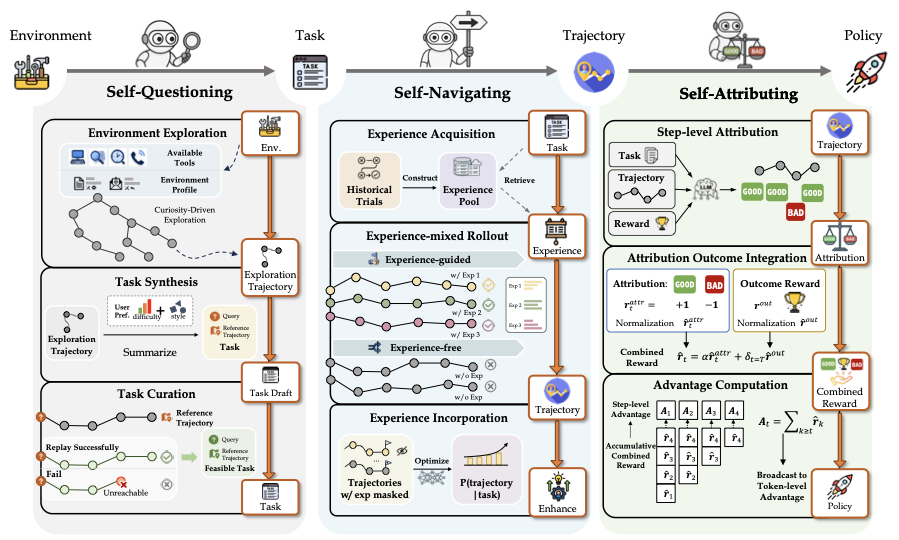
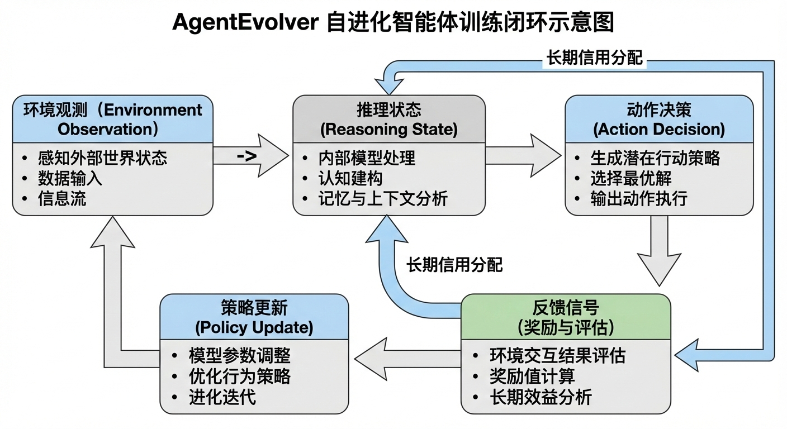
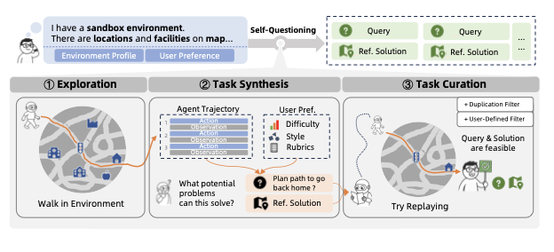
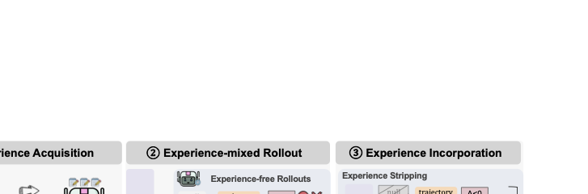
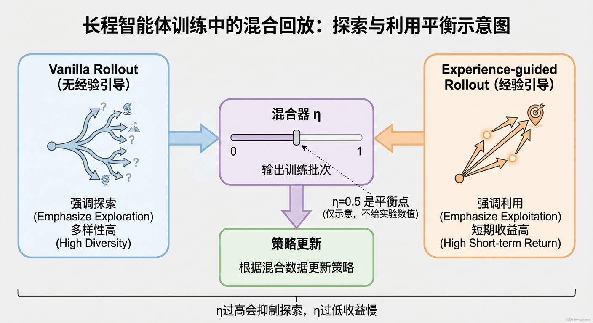
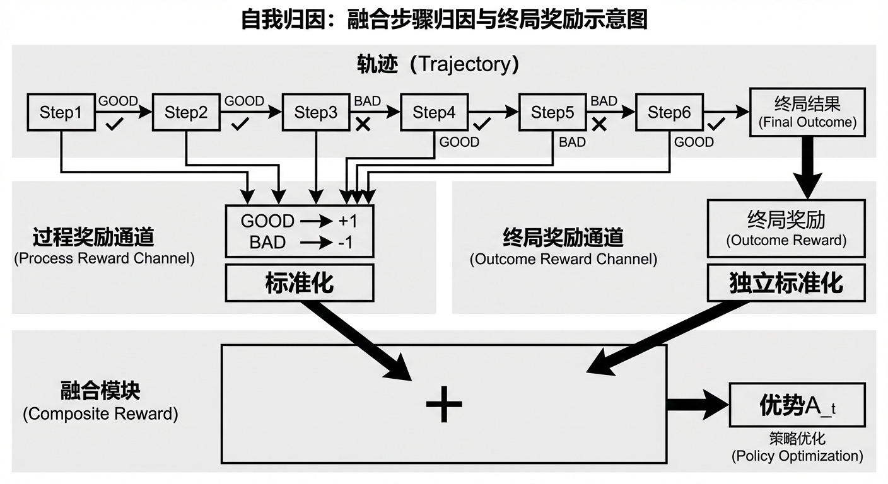
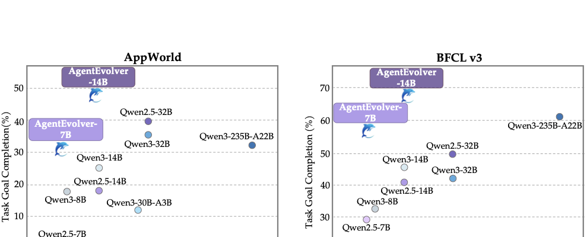

0. 快速定位：这篇到底在讲什么？
用 LLM 自主驱动“造题-探索-归因”闭环，把原本昂贵低效的 agent RL 训练，改造成可持续进化系统。
很多读者会把它当成“又一个 GRPO 变体”。其实重点是三模块协同，尤其是任务分布构造和 credit assignment 的联动。
提示：公式渲染依赖 MathJax CDN；若离线打开页面，公式可能显示为 LaTeX 源码。
0.5 阅读路线（高效且能深刻理解）
Round 1：先看闭环
先看 Figure: 总体框架，再看 问题与贡献，建立“为什么要三模块协同”的因果链。
Round 2：模块逐个吃透
按 Questioning → Navigating → Attributing 顺序读，关注输入输出与训练信号。
Round 4：迁移到你的课题
读 研究启发，把它改写成你可执行的“记忆操作策略学习 + 记忆归因”实验计划。
1. 前置知识（只补必要的）
- Proxy task distribution：先用可自动生成任务做代理训练分布，再逐步逼近真实目标分布。
- Experience-guided rollout：让一部分轨迹带经验提示，一部分不带，平衡探索与利用。
- Credit assignment：长轨迹里不同步骤贡献不同，不能只给最终统一奖励。
- Outcome vs Process reward：终局结果告诉你“成没成”，过程归因告诉你“哪一步对/错”。
2. 论文问题与贡献（带引用）
论文先指出两个工程痛点：新环境任务集构造昂贵，长轨迹 RL 的探索和样本利用效率低（见 Introduction）。
对应地，它给出三段式解法：
- Self-questioning：在未知环境中先探索，再自动合成任务与参考解，并用 LLM Judge 提供训练奖励。
- Self-navigating：把经验池做成可检索指导，在 rollout 时混合 vanilla 与 experience-guided 轨迹，并通过 selective boosting 保留有效梯度。
- Self-attributing：让 LLM 对每步动作做 GOOD/BAD 归因，构造过程奖励，与终局奖励分通道归一化后再融合。
引用定位：main tex、self_questioning.tex、self_navigating.tex、self_attributing.tex。
2.5 逐句精读（保姆级拆解）
精读 1：为什么不是直接用传统 PPO/GRPO？点击收起
传统做法默认“给够 rollouts 就会学到”，但 agent 场景每条轨迹成本高，随机探索会浪费大量采样预算。论文的核心是把“采样预算”变成可控资源，而不是 brute-force。
精读 2：Self-questioning 真正新增了什么？点击收起
关键不在于“合成题”本身，而是把环境 profile、用户偏好、可执行性过滤、参考解校验串成流水线，避免生成不可执行或过度重复的数据。
精读 3：Self-attributing 为什么能提样本效率？点击展开
它把稀疏终局信号拆成“每步方向性反馈”，让好步骤放大、坏步骤抑制。即便最终失败，也能保留“局部正确动作”的训练价值。
3. 方法详解（流程 + 关键机制）
关键图 1：总体框架（Figure: flowchart1103）

它证明了什么：论文不是单点技巧，而是系统级 pipeline 设计。
如何避免误读：不要把三模块看成可随意替换，实验显示协同效果明显高于单模块。
详细读图顺序：先看输入环境，再看中间三模块，再看最右侧优化信号回流。
对应结论：三模块互补，完整版本在主实验中最好。
误读风险：图是机制示意，不代表每个子模块都同等贡献，需结合消融表判断。
补充图：训练闭环结构化示意

建议配合 原总览图一起看：先用这张讲骨架，再回到原图讲三模块细节。
关键图 2：Self-questioning 管线

它证明了什么：任务不是拍脑袋生成，而是从轨迹蒸馏并经可执行性过滤。
如何避免误读：这套流程是“训练数据生成器”，不是最终推理时在线策略。
详细读图顺序：先看探索输入（profile + 偏好），再看任务构造，最后看 judge 反馈。
对应结论：合成数据在多设置下接近或超过原始数据训练。
误读风险：若忽略去重与可执行性筛选，数据量增加不一定带来收益。
关键图 3：Self-navigating 管线

它证明了什么：经验不仅在推理时“提示”，也通过训练被内化。
如何避免误读：如果只做显式注入但不做优化适配，收益会有上限。
详细读图顺序：先看经验池如何建，再看混合比例 η，再看 selective boosting。
对应结论：η 过大虽有短期收益，但会压制探索导致长期退化。
误读风险：不要把“更多经验引导”误当成“更好训练”。
补充图：探索-利用平衡（η）示意

读图顺序：先看左右两路，再看中间混合器，最后看策略更新输出。
Self-attributing 核心公式（从过程奖励到优势）
论文把每步 GOOD/BAD 映射为离散归因奖励，再做标准化并与终局奖励融合：
r_t = α · r_t(attr) + 1[t=T] · r(out)
A_t = Σ_{k=t..T} r_k
对应章节：sections/self_attributing.tex（Step-wise attribution / Composite reward）。
补充图：步骤归因与终局奖励融合

它的价值是把“为什么要双通道归一化”讲成可见流程。
4. 实验怎么读（证据链）
关键图 4：主结果图（Figure: plot_comparison）

它证明了什么：在参数规模不占优情况下，AgentEvolver 仍获得显著性能提升。
如何避免误读：请同时看论文表格中的 avg@8 与 best@8，不要只看单一指标。
关键 claim 对照
- Claim 1：完整三模块优于任意双模块组合。证据见主结果表（7B/14B 两组都成立）。
- Claim 2：Self-questioning 的合成数据在混合设置下可超过原始分布训练。证据见 synthetic/hybrid 对比表。
- Claim 3：Self-navigating 的经验引导需要探索平衡，η=0.5 更稳。证据见 η 分析曲线。
- Claim 4：Self-attributing 显著提升样本效率。证据见 step-to-threshold 与 AUC 对比。
最值得记住的数字
以文中描述为准：7B 与 14B 在 avg@8 / best@8 都有明显提升，且完整版本 consistently 最优。建议你复现实验时优先复核主表和 attributing 消融表。
5. 研究启发
对你“方向一”最直接的可落地启发：
- 把记忆系统动作化：ADD/UPDATE/DELETE/NOOP 这类动作可以直接进入策略学习。
- 把经验检索与策略优化分离：先指导 rollout，再通过 stripping/boosting 避免训练失真。
- 把过程归因单列为独立信号：与终局奖励分通道归一化后再融合，通常更稳。
- 先做闭环系统再追求单点最优：模块协同通常比单模块堆料收益更大。
6. 自测题
- 如果去掉 self-questioning，只保留 self-navigating + self-attributing，会在哪些场景先失败，为什么？
- 为什么经验引导比例 η 不能越大越好？请分别从“短期奖励”和“长期泛化”回答。
- self-attributing 里分开归一化过程奖励与终局奖励，解决了什么训练问题？
- 给你 2 周时间，你会优先复现哪一个子模块，指标怎么选？
7. 图索引（回看入口）
本节只做索引，不重复放图。图像文件位于 figs/，源码位于 source/。
8. 引用与文件位置
主文件：/Users/xiaoxiaoxuan/Downloads/长程记忆/papers/agentevolver/source/colm2025_conference.tex
引言与问题定义：/Users/xiaoxiaoxuan/Downloads/长程记忆/papers/agentevolver/source/sections/intro.tex
Self-questioning：/Users/xiaoxiaoxuan/Downloads/长程记忆/papers/agentevolver/source/sections/self_questioning.tex
Self-attributing：/Users/xiaoxiaoxuan/Downloads/长程记忆/papers/agentevolver/source/sections/self_attributing.tex
实验章节：/Users/xiaoxiaoxuan/Downloads/长程记忆/papers/agentevolver/source/sections/experiments.tex
论文 PDF：/Users/xiaoxiaoxuan/Downloads/长程记忆/papers/2511.10395_AgentEvolver.pdf